線性回歸
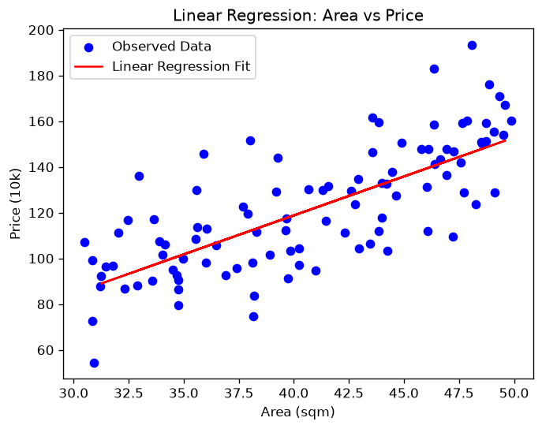
房屋面積預測房價，最基礎的直線關係回歸。
Mean Squared Error: 261.48
點卡片可直接看結果圖，也可以查看原始碼或到 Colab 親自執行、修改程式碼。
結果圖已預先產生，點開即看，不用等待。

房屋面積預測房價，最基礎的直線關係回歸。
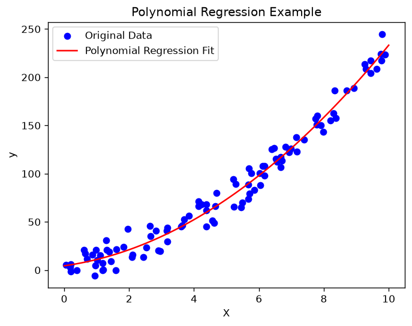
示範以多項式擬合非線性資料關係。
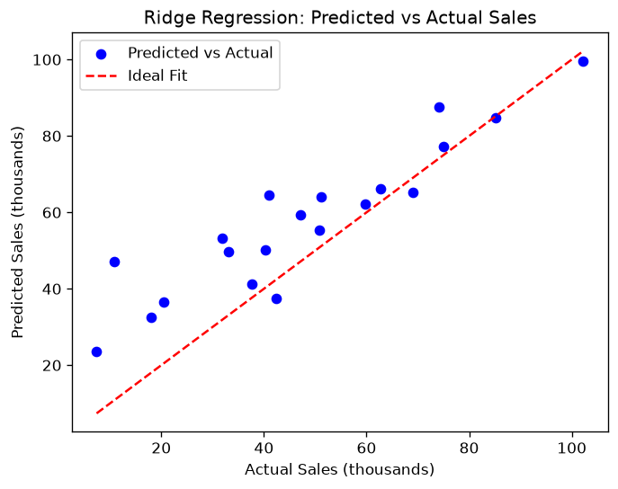
廣告支出與銷售額，示範 L2 正則化抑制過擬合。
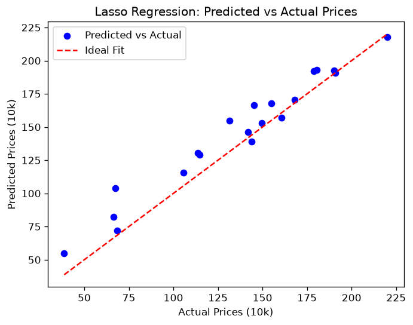
房屋價格預測，示範 L1 正則化與特徵篩選。
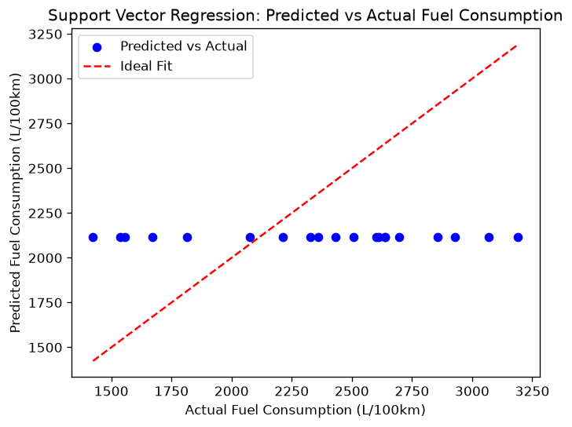
汽車油耗預測，示範核函數回歸與誤差容忍。
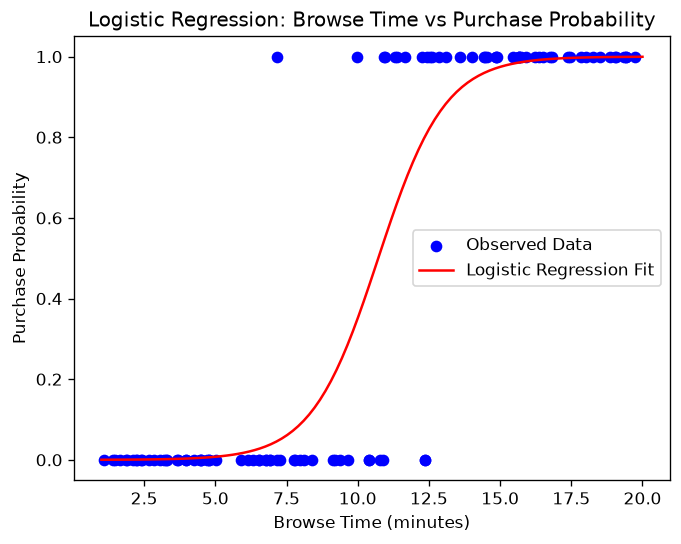
顧客瀏覽時間預測購買機率，分類問題的回歸應用。
下方每張卡片附上不同參數的對照圖（不用等）；若想親自拖拉桿即時觀察變化，點「在 Colab 開啟互動版」（需連線 Colab 執行階段，約1-3分鐘）。
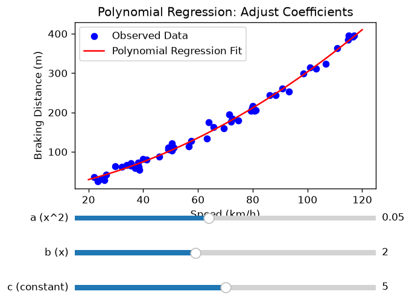
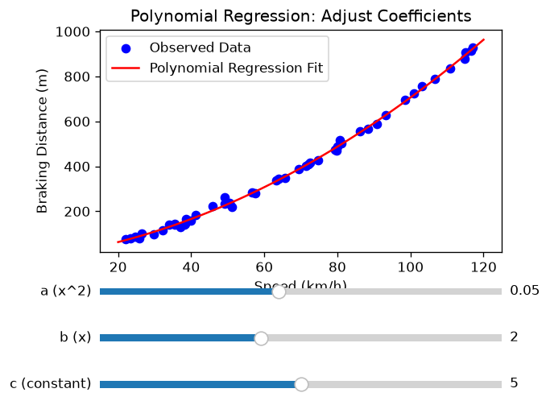
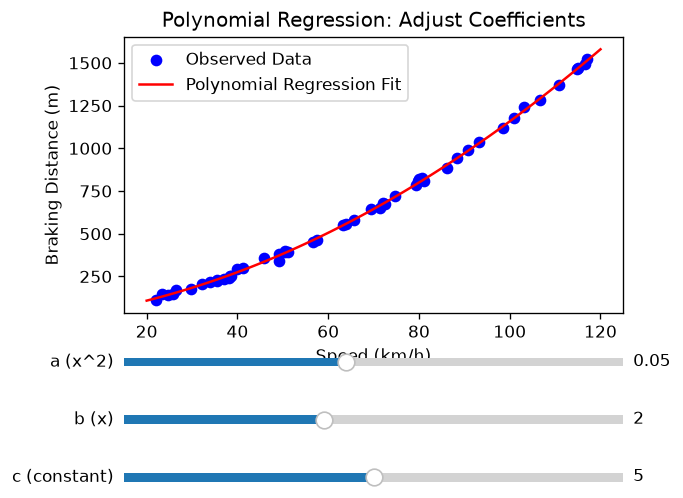
拖曳 a、b、c 三個係數，觀察煞車距離曲線變化。
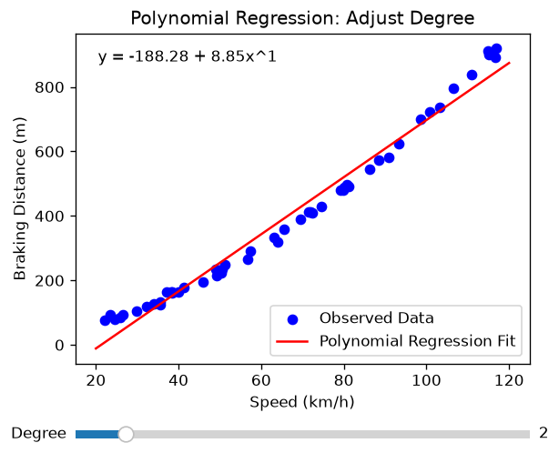
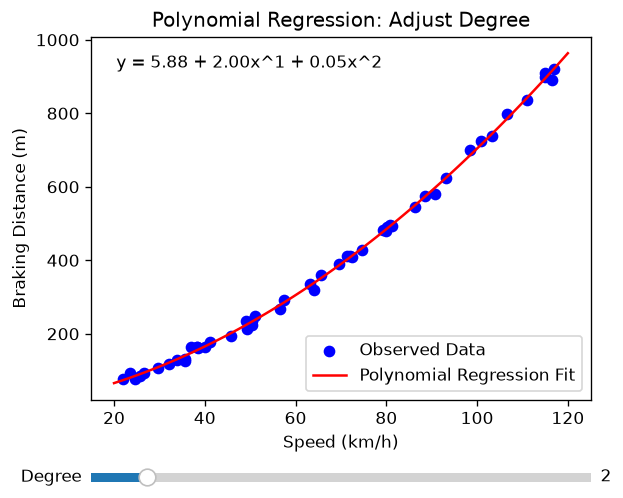
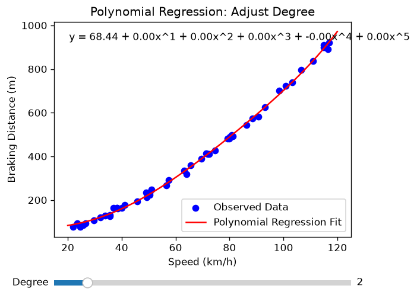
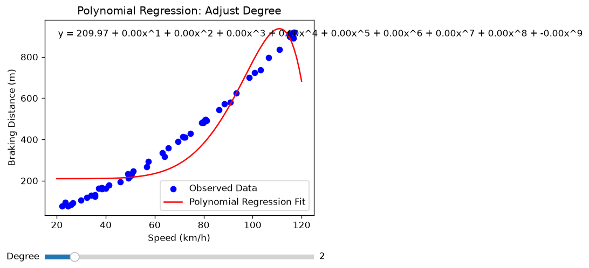
拖曳 Degree 滑桿，觀察項次如何影響曲線彎曲程度。
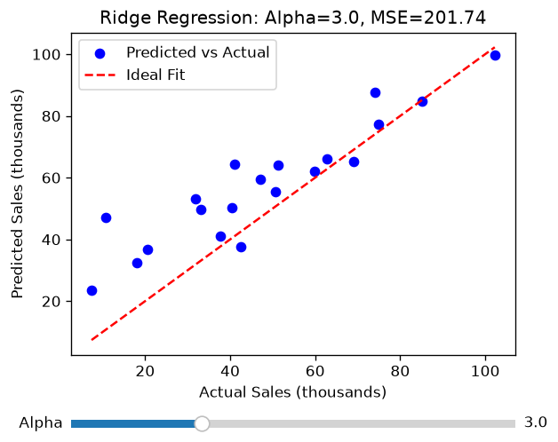
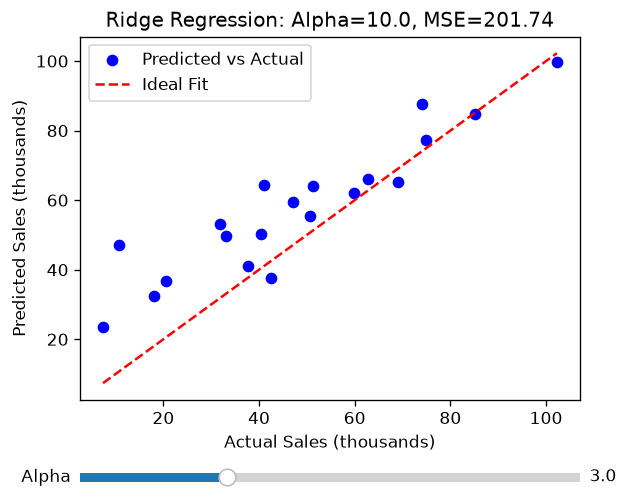
拖曳 Alpha 滑桿，觀察正則化強度如何影響 MSE。
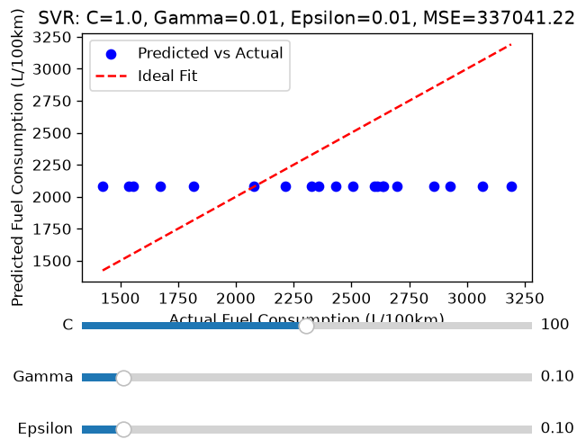
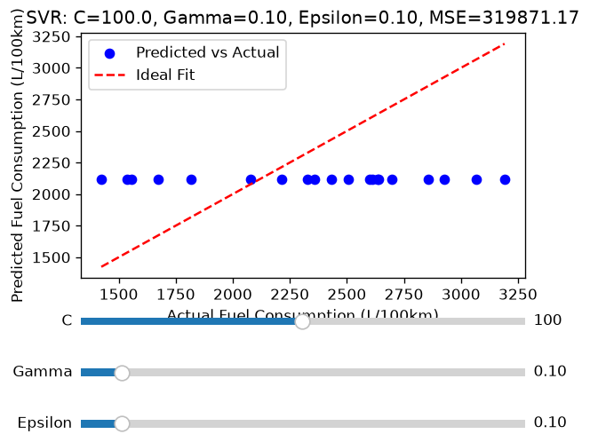
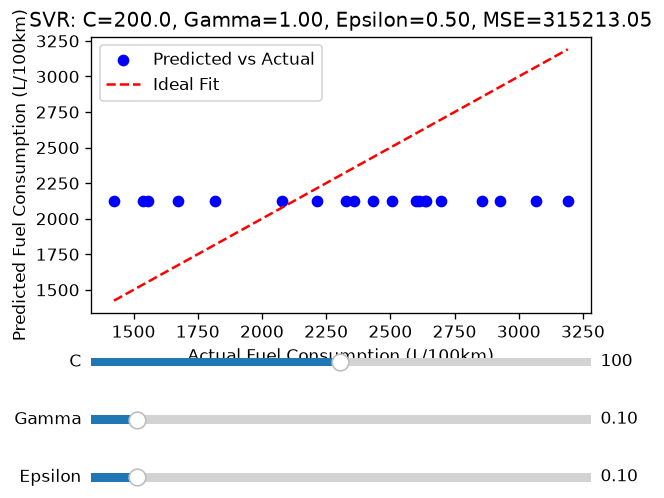
拖曳三個參數滑桿，觀察 SVR 核函數參數影響。
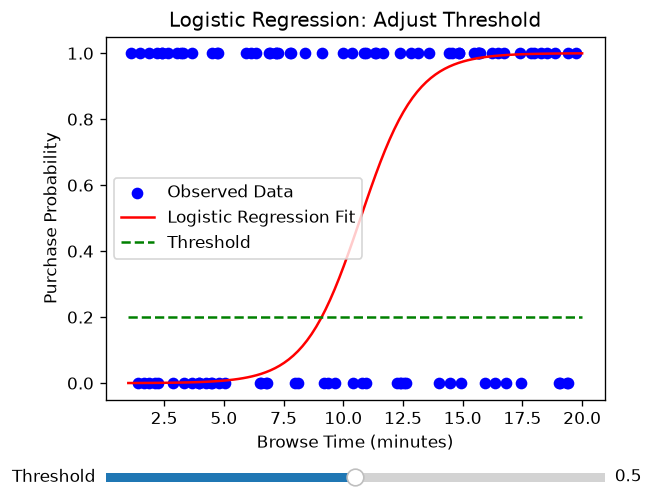
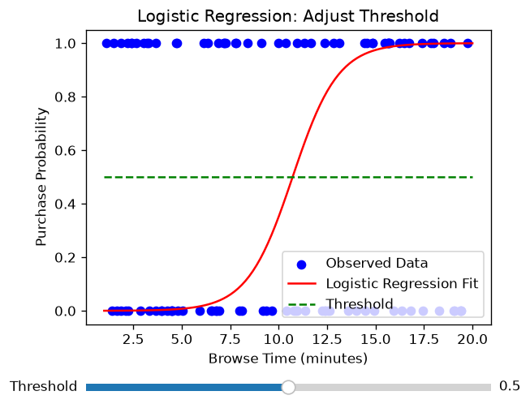
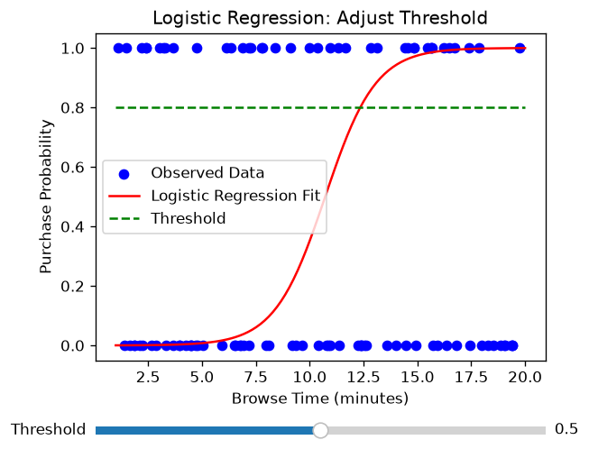
拖曳 Threshold 滑桿，觀察分類門檻如何影響判定結果。